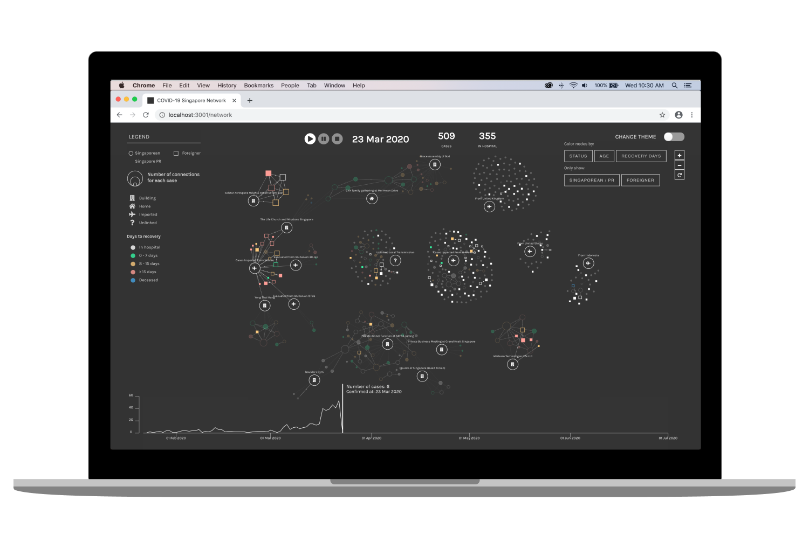

Created during March 2020
CLIENT
TOOLS
The graph network below use figures from a dataset of every confirmed COVID-19 case announced since January 24, 2020 when the country’s first case was reported, to March 23, 2020. The data tracks confirmed cases by gender, age, status, source of infection and other information published in case reports and official press releases from Singapore's Ministry of Health (MOH). I created an animation to track the growth and spread of COVID-19 cases over time, with the network helping to visualize the relationships between cases.
With the timeline animation, it is possible to track which cases were initially unlinked and eventually discovered to belong to a new cluster by the movement of nodes from one point to another and simultaneous creation of edges. The animation visualizes the growth of COVID-19 cases over two months (Jan 24 to March 23). It certainly felt alarming to see how the empty canvas was gradually filled up with hundreds of nodes!
We can see the connector nodes between the Life Church and Missions Singapore and Grace Assembly of God cluster, through a Chinese New Year house gathering. The missing link between the clusters was announced by MOH on Feb 25.
It can be observed that there are distinct phases in Singapore's growth trajectory of COVID-19 cases. The first locally transmitted case was announced on Feb 4. Since then small clusters of local transmission have emerged, but the outbreak was still kept under control. As COVID-19 spread globally, imported cases in Singapore surged due to a spike in travellers returning to Singapore, particularly from the United Kingdom.
Another interesting observation is how the SAFRA Jurong Cluster exploded in a matter of days with many highly connected entities, with 2 cases starting a new cluster through their social interactions with others.
To see specific information of each case and relationships, hover over a node. When a cluster root node is hovered instead, only direct connections to the cluster (for example, an attendee of an event which is the source of infections), are highlighted.
Nodes transition to a new color scheme according to filter selected. An interesting observation is young population of returnees from the United Kingdom (bluer nodes), and relatively older population (pinkish nodes) of unlinked cases and from the SAFRA Jurong cluster, as of March 23.
Considering the large numbers of graph elements on the screen, to declutter and highlight nodes belonging a certain category (eg. foreigners infected with COVID-19 in Singapore), a filter can be applied. Here, square nodes (foreigners) have been left opaque, with other nodes faded out. The pan & zoom functionality also enables the user to have a closer inspection of clusters and linkages.
